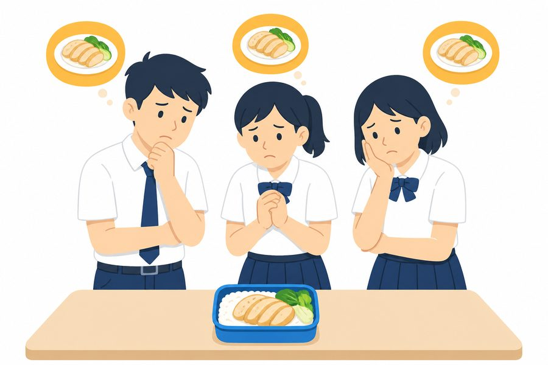

陽光Sunshine
通常：免費物品Usually a free good
陽光Sunshine
通常：免費物品Usually a free good
點揭模式：空白處點一下就顯示該格答案，再點可藏起。適合投影提問。Click mode: tap a blank to reveal that answer; tap again to hide it. Useful when projecting questions.
畫筆已開：可在筆記任何位置書寫。關閉畫筆後才可捲動、點揭或開連結。寫完請按「分享」，在 iPad 選郵件寄出。Pen is on: write anywhere on the notes. Turn the pen off to scroll, tap blanks, or open links. When finished, tap Share and choose Mail on iPad.
HTMS 經濟科課堂筆記 | 編輯：Mr. Sam Wong | 重要聲明：本課堂筆記僅供已購買課本之學生使用，並僅限內部參考。HTMS Economics Lesson Notes | Editor: Mr. Sam Wong
Important: These lesson notes are intended only for students who have purchased the textbook and are for internal use only.
第 1 章 基本的經濟學概念Chapter 1 Basic concepts in economics
對齊新版 UPEP《Economics in Action 1》第 1 章（1.1–1.5）。循環流程、正／規範陳述、三個基本經濟問題不在本章，見課程後續。 Aligned with UPEP Economics in Action 1 Chapter 1 (sections 1.1–1.5). Circular flow, positive/normative statements and the three basic economic problems are not in this chapter.
學習重點Learning focus
讀完本章，應能：
After this chapter you should be able to:
1.1 經濟學是一門社會科學Economics as a social science
經濟學是一門社會科學，主要探討個人和組織如何就資源分配作出選擇，從而運用有限的資源來滿足無窮的慾望。
Economics is a social science that studies how individuals and organisations make choices about the allocation of limited resources to satisfy unlimited wants.
換句話說，經濟學研究的是人的選擇行為：在資源不夠用完所有慾望時，人們如何決定用資源來做甚麼。課程要求用「受約束下求最大」（constrained maximisation）來理解，但不要求科學方法本身。
In other words, economics studies choice: how people decide what to do with resources when those resources cannot satisfy every want. Students should see this as constrained maximisation. The scientific method itself is not required.
資源分配關心如何把稀少資源用於生產不同物品與服務。物品與服務的分配（亦稱收入分配）關心這些產出如何在不同人之間分配。
Resource allocation is about using scarce resources to produce different goods and services. Distribution (also called income distribution) is about how those goods and services are shared among people.
兩個分支Two branches
① 微觀經濟學 Microeconomics
① Microeconomics
研究個別經濟單位（即住戶或廠商）如何作出決定。主要課題包括：住戶的消費決定、廠商的生產決定，以及住戶與廠商如何共同決定資源的分配。課堂上常把它理解為「某一市場的價格如何決定」。微觀內容主要在第 1–3 冊。
Studies how individual units (households or firms) make decisions. Key areas: household consumption, firm production, and how the two jointly determine resource allocation. In class this often means how price is determined in a particular market. Microeconomics is the focus of Books 1–3.
② 宏觀經濟學 Macroeconomics
② Macroeconomics
研究整個經濟體系的整體表現。主要課題包括：各種經濟指標（例如產出水平、物價水平和就業情況）的量度與決定因素，以及政府政策如何影響經濟表現。宏觀內容主要在第 4–5 冊。
Studies the economy as a whole. Key areas: measurement and determinants of indicators such as output, the price level and employment, and how government policy affects overall performance. Macroeconomics is the focus of Books 4–5.
微觀：一間快餐店Micro: one shop
宏觀：整個香港經濟Macro: whole economy
先問：講的是一間店／一個市場，還是整個香港經濟？Ask first: one shop/market, or the whole economy?
應試攻略：同一政策，兩種視角。例如法定最低工資上調——微觀看快餐店兼職時薪、便利店成本、學生兼職收入、食肆僱主利潤；宏觀看整體失業率、通脹率、總消費、政府預算。不要把「工資」自動當成宏觀，也不要把「失業」自動當成微觀；先問：這是在講個別市場／個別群體，還是整個經濟的總量？
Exam tip: one policy, two lenses. If the statutory minimum wage rises, micro looks at part-time wages in fast-food shops, convenience-store costs, students’ part-time pay and restaurant profits. Macro looks at the overall unemployment rate, inflation, total consumption and the government budget. Ask first: is this about a particular market or group, or about economy-wide totals?
小練習 1.1Quick check 1.1
題 1Q1
新聞：「全港失業率上升。」這是微觀還是宏觀？
Headline: “Hong Kong’s unemployment rate has risen.” Micro or macro?
答案：宏觀
Answer: macro
講的是整個經濟的總量，不是某一間店或某一個市場。
It is an economy-wide total, not one shop or one market.
題 2Q2
「某快餐店因最低工資上調而加價。」這是微觀還是宏觀？
“A fast-food shop raises prices after the minimum wage rises.” Micro or macro?
答案：微觀
Answer: micro
同一政策也可以是微觀：這裡只看一間店的價格。
The same policy can be micro: here we only look at one shop’s price.
1.2 慾望、稀少性和選擇Wants, scarcity and choice
經濟學探討人們面對有限的資源時如何作出決策，以滿足無窮的慾望。這牽涉三個基本的經濟學概念：慾望、稀少性和選擇。
Economics studies how limited resources are used to satisfy unlimited wants, so three ideas come first: wants, scarcity and choice.

慾望無窮Unlimited wants
飯、打籃球、追劇，一個接一個Rice, basketball, a drama — one after another
→

資源有限 → 稀少Limited resources → scarcity
一份飯，三個人想要One lunch, three people want it
→
必須選擇Choice is necessary
打籃球，就要放棄追劇Choose basketball, give up the drama
A. 慾望 WantsWants
「慾望」是指人類對各種事物的渴求。慾望可以是物質上的（例如食物、藥物、住屋）或非物質上的（例如幸福、友誼、尊重）。
Wants are human desires for various things. Wants can be material (e.g., food, medicines, housing) or non-material (e.g., happiness, friendship, respect).
人類慾望永遠無法完全滿足：一個慾望被滿足，另一個會出現。我們總想要更多、更好、更多種類。例如對食物的慾望：吃飽之後仍會想吃得更好、有更多選擇。因此：
Human wants can never be fully satisfied: when one want is met, another appears. People want more, better, and a greater variety. Food is the usual example: after a simple meal, people still want better food and more choice. Hence:
人類慾望是無窮的。
Human wants are unlimited.
B. 稀少性 ScarcityScarcity
當有限的資源無法滿足無窮的慾望時，便會出現稀少性。稀少性是所有經濟學問題的根源。
Scarcity arises when limited resources are insufficient to satisfy unlimited wants. Scarcity is the source of all economic problems.
換句話說，我們的慾望永遠多於我們所擁有的。由於資源有限而慾望無窮，所以不論財富和權力如何，每個人、住戶、廠商和政府，都要面對稀少性的問題。時間同樣是稀少資源：一天只有 24 小時，不能同時做所有想做的事。
Scarcity means we want more than we have. Individuals, households, firms and governments all face it, regardless of wealth. Time is also scarce: there are only 24 hours in a day, so not every wanted activity can be done.
應試攻略：稀少性是一個相對的概念。要判斷某物品是否稀少，須比較可供使用的數量與人們渴望擁有的數量。即使某物品存量很大，只要仍少於人們渴望擁有的數量，它仍然稀少。相反，若可供使用的數量已足夠滿足所有慾望，稀少性就不存在。供應多的資源不一定稀少；供應少的也不自動等於稀少——還要看慾望有多大。
Exam tip: scarcity is a relative concept. It is not about an absolutely small amount. Compare quantity available with quantity wanted. A good in large supply is still scarce if available quantity is less than quantity wanted. If available quantity is enough for all wants, scarcity does not exist. A large supply need not be scarce; a small supply need not be scarce either — it depends on wants.
可供使用的數量 < 渴望擁有的數量Available < wanted
→
有稀少性Scarcity
可供使用的數量 ≥ 渴望擁有的數量Available ≥ wanted
→
沒有稀少性No scarcity
例子Examples
飯堂雞扒飯：只剩一份，三個同學都想要 → 有稀少性。放學後時間：想打籃球、去補習、追劇，但只有兩小時 → 有稀少性。
Canteen chicken rice: one portion left, three classmates want it → scarcity. After-school time: she wants basketball, tutorial class and a drama, but only two hours remain → scarcity.
不要寫「資源不能滿足所有慾望」。應寫資源不足以滿足所有慾望。Scarcity 是名詞；scarce 是形容詞；不要寫成 scare。也不要把稀少性說成只有窮人才有。
Do not write “resources cannot satisfy all wants”. Write that resources are insufficient to satisfy all wants. Scarcity is a noun; scarce is an adjective; do not write “scare”. Do not say only poor people face scarcity.
稀少性 ≠ 短缺（shortage）。稀少性比較「想要」與「可供」，與價格無關。短缺是在某一價格下，需求量大於供給量的市場現象。幾乎所有有價格的物品都有稀少性，但不一定出現短缺。
Scarcity ≠ shortage. Scarcity compares wants with availability, independently of price. A shortage is quantity demanded exceeding quantity supplied at a given price. Almost every priced good is scarce; it need not be in shortage.
C. 選擇 ChoiceChoice
由於存在稀少性的問題，沒有人能夠運用有限的資源來滿足所有慾望。在有限的資源下，所有人都要作出選擇，決定要滿足哪些慾望，以及放棄哪些慾望。若決策者是理性的，會選自己認為價值最高的方案。
Because of scarcity, no one can satisfy all wants with limited resources, so everyone must make a choice: which wants to satisfy and which to give up. A rational decision maker chooses the option with the highest value.
政府也要選擇Governments choose too
政府也要選擇如何把有限的資源分配至不同範疇。如果要增加教育方面的資源，投放於其他範疇的資源便要減少。能加稅或借錢並不取消稀少性：多拿來的資源仍有其他用途。
Government resources are limited. Spending more on education means less for health care, housing and other areas. Raising tax or borrowing does not remove scarcity: the extra funds still have alternative uses.
稀少性也會帶來競爭。新書把競爭留到第 2 章，本章先抓住：稀少 → 必須選擇 → 選擇必有代價。
Scarcity also leads to competition. The textbook leaves competition to Chapter 2. For this chapter, keep the chain: scarcity → choice is necessary → every choice has a cost.
小練習 1.2Quick check 1.2
題 1 有沒有稀少性Q1 Is there scarcity?
雨天放學，室內只開一個羽毛球場。A 班和 B 班都想在同一時段練球。這情況有沒有稀少性？
After school on a rainy day, only one indoor badminton court is open. Class A and Class B both want that same time slot. Is there scarcity?
有／沒有：有
Yes / no: Yes
因為可供使用的數量（一個場）少於渴望擁有的數量（兩班）。不是因為「場地很少」，而是比較渴望擁有與可供使用。
Available quantity (one court) is less than quantity wanted (two classes). The point is the comparison, not that courts are “few” in absolute terms.
題 2 稀少性還是短缺Q2 Scarcity or shortage?
旺角一間店有最新款遊戲主機現貨，標價 $2,800，不用排隊也買到。這主機有沒有稀少性？有沒有短缺？
A Mong Kok shop has the latest games console in stock at $2,800. No queue is needed. Is the console scarce? Is there a shortage?
稀少性：有；短缺：沒有
Scarcity: yes; shortage: no
有價格、想要的仍多過可免費無限取用，故有稀少性。該價格下買得到、不必排隊，故沒有短缺。
It has a price and is not freely available in unlimited amount, so there is scarcity. At that price it can be bought without a queue, so there is no shortage.
小測試 1.1Quiz 1.1
課本 p.6Textbook p. 6（a）稀少性的出現是因為可用的資源數量有限。（正確／錯誤）
(a) Scarcity arises because the quantity of resources available is limited. ( True / False )
答案：錯誤
Answer: False
（b）在較發達的國家，面對稀少性問題的人會較少。（正確／錯誤）
(b) In more developed countries, fewer people face the problem of scarcity. ( True / False )
答案：錯誤
Answer: False
（c）選擇是不可避免的，因為資源有限，但我們的慾望無窮。（正確／錯誤）
(c) Choices are unavoidable because we have unlimited wants but limited resources. ( True / False )
答案：正確
Answer: True
（d）即使政府可以籌集資金，但它仍須作出選擇。（正確／錯誤）
(d) Even if the government can raise funds, it still has to make choices. ( True / False )
答案：正確
Answer: True
（e）經濟學是一門研究如何消除稀少性的學問。（正確／錯誤）
(e) Economics is the study of how to eliminate scarcity. ( True / False )
答案：錯誤
Answer: False
1.3 機會成本Opportunity cost
慾望無窮 + 資源有限Unlimited wants + limited resources
→
稀少性Scarcity
→
選擇Choice
→
機會成本Opportunity cost
A. 機會成本的定義Definition of opportunity cost
機會成本是指被放棄的選項中，價值最高者（或所放棄的最佳其他選項）的價值。在經濟學裡，所有成本都是指機會成本。
Opportunity cost is the value of the highest-valued option forgone (the best alternative forgone). In economics, all costs mean opportunity costs.
作選擇時往往放棄多於一個方案，但成本只計其餘選項之中價值最高的那一個，不是所有被放棄項的加總。原因是：那些被放棄的方案通常不能同時實行——樂澄不打籃球時，不能既追劇又做 past paper；次選佔用了那些時間，第三選本來就做不到。
A choice usually means giving up more than one option, but cost counts only the highest-valued option among the rest, not the sum of all options given up. The forgone options typically cannot be taken at the same time: if Chloe does not play basketball, she still cannot binge a drama and do past papers simultaneously.
用詞：highest（不是 high / higher）、valued（不是 value）、forgone（課本拼法）。只有一個可選方案時，沒有選擇，機會成本為零——因為沒有任何東西被放棄。
Wording: highest (not high/higher), valued (not value), forgone. If only one option is available, there is no choice and opportunity cost is zero — nothing is given up.
例子：樂澄如何用放學後的時間Example: how Chloe spends time after school
假設三項活動都無需付費，她只能選一項：
Assume the activities are free and she can choose only one:
| 排序Rank | 活動Activity | 角色Role |
|---|---|---|
| 1st | 打籃球Playing basketball | 所選Chosen option |
| 2nd | 追劇Watching a drama | 最高價值被放棄項 = 成本Highest-valued option forgone = cost |
| 3rd | 做 past paperDoing past papers | 其他被放棄項（不計入成本）Other option forgone (not counted as cost) |
樂澄的機會成本是追劇的價值，不是追劇加做 past paper。
Chloe’s opportunity cost is the value of watching the drama, not the drama plus past papers.
① 打籃球① Basketball
所選 ✓Chosen ✓
≠
② 追劇② Drama
= 機會成本= opportunity cost
+
③ past paper③ Past papers
不計入not counted
沒有選擇就沒有成本。例如一張不可轉讓、今晚到期的電影換票證：既不能轉售給同學，也不能留待日後，使用它並沒有放棄任何東西，機會成本為零。若換票證可轉讓，使用它的成本就是轉售可得的價值。
No choice implies no cost. A non-transferable cinema voucher that expires tonight cannot be resold to a classmate or saved, so using it gives up nothing and opportunity cost is zero. If the voucher is transferable, the cost of using it is the resale value.
小練習 1.3AQuick check 1.3A
題 1Q1
樂澄選打籃球。機會成本是甚麼？
Chloe chooses basketball. What is the opportunity cost?
答案：追劇的價值
Answer: the value of the drama
成本只計最高價值被放棄項。追劇是次選；past paper 是第三選，不能同時做，故不計入。
Cost counts only the highest-valued option forgone. The drama is second preference; past papers are third and cannot be done at the same time, so they are not added.
題 2Q2
若樂澄其實沒有其他可做的事，機會成本是多少？
If Chloe has no other option at all, what is the opportunity cost?
答案：零
Answer: zero
沒有選擇就沒有被放棄的東西。
No choice means nothing is given up.
小測試 1.2Quiz 1.2
課本 p.9Textbook p. 9假設美寶正考慮中學畢業後的去向。她有多個選擇，其優先次序排列如下：
第一選項：在大學繼續學業
第二選項：從事全職工作
第三選項：成為 YouTuber
根據以上資料，判斷下列陳述是否正確。
Suppose Mable is deciding what to do after graduating from secondary school. She has several options and her order of preference is as follows:
1st option: Studying at a university
2nd option: Taking a full-time job
3rd option: Being a YouTuber
Based on the above information, determine whether the following statements are correct.
（a）美寶在大學繼續學業的機會成本是全職工作的收入。（正確／錯誤）
(a) Mable’s opportunity cost of studying at a university is the income from a full-time job. ( True / False )
答案：正確
Answer: True
（b）如果美寶選擇在大學繼續學業，她便要放棄全職工作的收入和成為 YouTuber 的價值。（正確／錯誤）
(b) If Mable chooses to study at a university, she foregoes the income from a full-time job and the value of being a YouTuber. ( True / False )
答案：錯誤
Answer: False
（c）如果美寶選擇從事全職工作，她放棄的選項中，價值最高者是成為 YouTuber。（正確／錯誤）
(c) If Mable chooses to take a full-time job, her highest-valued option forgone is being a YouTuber. ( True / False )
答案：錯誤
Answer: False
（d）從事全職工作和成為 YouTuber 的成本相同。（正確／錯誤）
(d) The cost of taking a full-time job and being a YouTuber are the same. ( True / False )
答案：正確
Answer: True
B. 全部成本 Full costFull cost
我們在作出選擇時，往往須放棄一些金錢和非金錢的資源，這些資源通常都有其他用途。機會成本的概念必然是指「全部成本」，它包括金錢成本和非金錢成本。
Choosing an option usually means giving up other uses of money and of non-money resources such as time. Opportunity cost always means full cost.
全部成本 = 金錢成本 + 非金錢成本
Full cost = money cost + non-money cost
金錢成本：票價Money cost: ticket
非金錢成本：放棄兼職Non-money cost: forgone work
看電影的全部成本 = 票價 + 這段時間本可賺到的錢Full cost of the film = ticket + what that time could have earned
- 金錢成本（亦稱貨幣成本、顯性成本 explicit cost）：用於所選選項的金錢支出。
- Money cost (also monetary cost or explicit cost): the money expenses of the chosen option.
- 非金錢成本（亦稱非貨幣成本、隱含成本 implicit cost）：所使用的非金錢資源（例如時間）的其他用途中，價值最高者。也可以包括幸福感、對健康的影響等。
- Non-money cost (also non-monetary cost or implicit cost): the value of the best alternative use of the non-money resources spent, most often time. Happiness or health effects can also count.
例子 1：樂澄打籃球Example 1: Chloe playing basketball
金錢成本 = $0（假設免費用學校球場）。非金錢成本 = 追劇的價值（時間的最佳其他用途）。全部成本 = 追劇的價值。
Money cost = $0 (assume the school court is free). Non-money cost = the value of watching the drama (best alternative use of the time). Full cost = the value of watching the drama.
例子 2：欣怡星期六去 MCL 看電影Example 2: Yan watches a film at MCL on Saturday
第一志願：花 $90 看兩小時電影。第二志願：在茶飲店兼職兩小時，賺 $140。看電影的全部成本 = $90 + $140 = $230。$90 是金錢成本；$140 是把兩小時用來兼職本可賺到的收入，屬時間成本。
First preference: a two-hour film costing $90. Second preference: two hours of drink-shop work earning $140. Full cost of the film = $90 + $140 = $230. $90 is money cost; $140 is the income forgone from the time, i.e. time cost.
做一份工的成本 ≠ 辭職的成本。兩人薪金可以相同，但做這份工的機會成本是各自放棄的「下一份最好的工作」（含非金錢回報），所以可以不同。辭職的成本則是放棄這份工本身的全部回報（薪金 + 滿足感等），兩人的非金錢回報不同，辭職成本也可以不同。因此「做一份工的機會成本等於該工薪金」是錯的。
The cost of doing a job is not the cost of quitting it. Two people can earn the same salary, yet the cost of being in that job is each person’s next-best option (including non-money returns), so the costs need not be equal. The cost of quitting is the full value of the job given up (pay plus non-money returns), which can also differ. So “the opportunity cost of doing a job equals its salary” is false.
生活案例 考試日由屯門去尖沙咀考場Living case Tuen Mun to Tsim Sha Tsui on exam day
考試日由屯門去尖沙咀考場，可選港鐵或的士：
Exam day: Tuen Mun to Tsim Sha Tsui. Two ways to get there:
| 車資Fare | 時間Time | |
|---|---|---|
| 港鐵MTR | $18 | 60 min |
| 的士Taxi | $180 | 20 min |
為甚麼欣怡選港鐵，爸爸卻選的士？
Why does Yan take the MTR while her father takes a taxi?
欣怡是中四生，茶飲店時薪 $54；爸爸時薪 $540。他們乘搭港鐵或的士的機會成本計算如下：
Yan is a Form 4 student earning an hourly wage of $54 from her part-time job, while her father earns $540 per hour. Their opportunity costs of taking the MTR or taking a taxi are calculated as follows:
| 港鐵MTR | 的士Taxi | |
|---|---|---|
| 欣怡 時薪 $54Yan $54 / hour |
車資：$18 所放棄的收入 = $54 × 1 = $54 全部成本 = $18 + $54 = $72 成本較低 Fare: $18 Income forgone = $54 × 1 = $54 Full cost = $18 + $54 = $72 Lower cost |
車資：$180 所放棄的收入 = $54 × (1/3) = $18 全部成本 = $180 + $18 = $198 Fare: $180 Income forgone = $54 × (1/3) = $18 Full cost = $180 + $18 = $198 |
| 爸爸 時薪 $540Father $540 / hour |
車資：$18 所放棄的收入 = $540 × 1 = $540 全部成本 = $18 + $540 = $558 Fare: $18 Income forgone = $540 × 1 = $540 Full cost = $18 + $540 = $558 |
車資：$180 所放棄的收入 = $540 × (1/3) = $180 全部成本 = $180 + $180 = $360 成本較低 Fare: $180 Income forgone = $540 × (1/3) = $180 Full cost = $180 + $180 = $360 Lower cost |
他們各自會選擇乘搭機會成本較低的交通工具。因此欣怡會乘港鐵，爸爸則會乘的士。
They will choose the transport means with a lower opportunity cost. Therefore, Yan will take the MTR while her father will take a taxi.
總括而言，時間成本較低的人較有可能選擇較便宜但較耗時的交通工具。相反，時間成本較高的人較有可能選擇較昂貴但耗時較少的交通工具。
To conclude, people with lower time costs are more likely to choose cheaper but more time-consuming means of transportation. Conversely, people with higher time costs are more likely to choose more expensive but less time-consuming transportation.
不論是哪種情況，理性的人都會選擇全部成本較低的選項。
In either case, rational people choose the option with the lower full cost.
同一道理：兩個同學同樣排隊兩小時買 $680 的演唱會門票，時薪 $55 的兼職學生與時薪 $220 的補習老師，全部成本不同，因為時間成本不同。
The same logic applies if two classmates each queue two hours for a $680 concert ticket: a student on $55 an hour and a tutor on $220 an hour have different full costs because their time costs differ.
教具：全部成本計算器Lab: full-cost calculator小練習 1.3BQuick check 1.3B
題 1Q1
文諾花 $80 看兩小時電影，這兩小時本可在茶飲店賺 $50/小時。看電影的全部成本是多少？
Marcus spends $80 on a two-hour film. Those two hours could have earned $50/hour at a drink shop. Full cost of watching the film?
答案：$180
Answer: $180
全部成本 = 金錢成本 $80 + 時間成本 $50 × 2 小時 = $180。票價以外，還要計這兩小時本可賺到的錢。
Full cost = money cost $80 + time cost $50 × 2 hours = $180. Besides the ticket, count the wages those two hours could have earned.
小測試 1.3Quiz 1.3
課本 p.12Textbook p. 12假設欣嵐是兼職店員，時薪為 $60，而偉強是私人補習導師，時薪為 $250。兩人都想購買一部價值 $8,800 的智能手機，他們都需要犧牲工作時間，在手機店外排隊兩小時。計算他們購買智能手機的全部成本。
Suppose Daisy is a part-time shopkeeper earning an hourly wage of $60 while Martin is a private tutor who earns an hourly wage of $250. To buy a new smartphone which costs $8,800, they both need to queue outside the smartphone shop for two hours, giving up their working time. Calculate their full cost of buying a smartphone.
欣嵐：金錢成本 $8,800 ＋ 時間成本 $120 ＝ 全部成本 $8,920
Daisy: money cost $8,800 + time cost $120 = full cost $8,920
偉強：金錢成本 $8,800 ＋ 時間成本 $500 ＝ 全部成本 $9,300
Martin: money cost $8,800 + time cost $500 = full cost $9,300
小測試 1.4Quiz 1.4
課本 p.12Textbook p. 12（a）擔任一份工作的機會成本，必然等於該工作的薪金。（正確／錯誤）
(a) The opportunity cost of performing a job is always equal to the salary offered by that job. ( True / False )
答案：錯誤
Answer: False
（b）擔任一份低薪工作的機會成本，可能低於擔任一份高薪工作的機會成本。（正確／錯誤）
(b) The opportunity cost of performing a lower-paying job can be lower than performing a higher-paying job. ( True / False )
答案：正確
Answer: True
（c）辭去工作的機會成本，取決於最佳其他工作的薪金。（正確／錯誤）
(c) The opportunity cost of quitting a job depends on the best alternative offer available. ( True / False )
答案：錯誤
Answer: False
例題拆解 1.1 比較全部成本Guided Example 1.1 Comparing the full cost
課本 p.13Textbook p. 13題目（a）顧客為買一雙限量版運動鞋，可能需要在店外排隊數小時。因此，有些專業人士會僱用學生為他們排隊購買運動鞋。以機會成本為依據，解釋為甚麼這些專業人士會選擇僱用學生，而不是自己排隊購買運動鞋。
Question (a) To buy a pair of limited-edition sneakers, people may need to spend a few hours queuing outside the store. It is known that some professionals hire students to queue and buy sneakers for them. Explain, in terms of the opportunity cost, why these professionals choose to hire students instead of queuing to buy for themselves.
（b）一個三小時的自助午餐，在週末的價格比工作日貴 50%。不過，許多白領人士仍然選擇在週末，而不是在工作日享用自助午餐。以機會成本為依據，解釋為甚麼白領人士在週末享用自助餐，不一定比工作日昂貴。
(b) A three-hour buffet lunch is 50% more expensive on the weekend. Many office ladies still have a buffet lunch on the weekend rather than on weekdays. Explain, in terms of the opportunity cost, why it is not necessarily more expensive for office ladies to have their buffet on the weekend than on weekdays.
解題思路Thinking process
1. 重溫機會成本的定義，以及它包含哪些成本。Recall the definition of opportunity cost and what costs are included.
機會成本是指被放棄的選項中，價值最高者的價值。
Opportunity cost refers to the value of the highest-valued option forgone.
全部（機會）成本 = 金錢成本 + 非金錢成本
Full (opportunity) cost = Money cost + Non-money cost
2. 比較不同情況下的金錢成本和非金錢成本，以評估全部成本。Compare the money cost and the non-money cost in different situations to evaluate the full cost.
（a）僱用學生購買 對 自行排隊購買
(a) Hiring students to buy vs queuing to buy
| 僱用學生購買Hiring students to buy | 自行排隊購買Queuing to buy | |
|---|---|---|
| 金錢成本Money cost | 運動鞋價格 + 支付給學生的工資Price of the sneakers + Wages paid to students | 運動鞋價格Price of the sneakers |
| 時間成本Time cost | 所放棄的收入Income forgone |
（b）工作日 對 週末
(b) Weekdays vs weekend
| 工作日Weekdays | 週末Weekend | |
|---|---|---|
| 金錢成本Money cost | 自助午餐的價格Price of the buffet lunch | 自助午餐的價格Price of the buffet lunch |
| 時間成本Time cost | 所放棄的收入Income forgone | 較低或沒有時間成本Low or no time cost |
| 建議答案Answer | 答案結構Structure |
|---|---|
| 全部成本 = 金錢成本 + 時間成本Full cost = Money cost + Time cost | 指出全部成本的意思。State the meaning of full cost. |
|
（a） 僱用學生購買運動鞋會產生額外的金錢成本（即支付給學生的工資）。然而，如專業人士自行排隊購買，會產生時間成本（即所放棄的收入）。 Hiring students to buy sneakers incurs an extra money cost (i.e., wages paid to the students). However, professionals who queue for themselves incur a time cost (i.e., income forgone). |
比較兩個選項的額外金錢成本和時間成本。Compare the extra money cost and the time cost of the two options. |
| 如果支付給學生的工資低於所放棄的收入，那麼專業人士僱用學生購買運動鞋的全部成本，會低於自行排隊購買的全部成本。因此，有些專業人士會僱用學生購買運動鞋。 If the wages paid to students is lower than the income forgone, the full cost of the professionals hiring students to buy sneakers is lower than queuing to buy for themselves. Hence, the professionals would choose to hire students. | 證明該決定屬於成本較低的選項。Justify the decision as a lower-cost option. |
|
（b） 在週末吃自助午餐的金錢成本（即自助午餐的價格）較高，但時間成本（即所放棄的收入）則比工作日低。 On the weekend, the money cost of a buffet lunch (i.e., price of the buffet lunch) is higher, but the time cost (i.e., income forgone) is lower than on weekdays. |
比較兩個選項的金錢成本和時間成本。Compare the money cost and the time cost of the two options. |
| 如果週末吃自助午餐所節省的時間成本高於額外的金錢成本，這個選項的全部成本便會較低。 If the time-cost saved outweighs the extra money cost, the full cost of having a buffet lunch on the weekend would be less expensive. | 證明該決定屬於成本較低的選項。Justify the decision as a lower-cost option. |
C. 機會成本的變動Changes in opportunity cost
成本是「被放棄的選項中，價值最高者」的價值。因此：成本會變，當這項的價值變了，或它被另一選項取代。以下用樂澄的三項活動來記。
Cost is the value of the highest-valued option forgone. Cost changes when that option’s value changes, or when another option replaces it. The tables below use Chloe’s three after-school activities.
例子：樂澄對於如何使用課餘時間的選擇Example: how Chloe spends time after school
下表列出各選項的優先次序及對她的價值，方便判斷機會成本。
The table shows her order of preference and the value of each option, so we can identify the opportunity cost.
| 優先次序Preference | 活動Activity | 對樂澄的價值Value to Chloe | |
|---|---|---|---|
| 第一選項1st option | 打籃球Playing basketball | $500 | ← 所選的選項← Chosen option |
| 第二選項2nd option | 追劇Watching a drama | $400 | ← 被放棄的選項中，價值最高者← Highest-valued option forgone |
| 第三選項3rd option | 做 past paperDoing past papers | $300 | ← 其他放棄的選項← Other option forgone |
樂澄打籃球的機會成本是追劇的價值，即 $400。
Chloe’s opportunity cost of playing basketball is the value of watching the drama, i.e. $400.
① 所選選項的價值改變Change in the value of the chosen option
當所選選項的價值有所改變時，選擇它的機會成本不會改變。這是因為被放棄的選項中，價值最高者不會受影響。
When the value of the chosen option changes, its opportunity cost does not change, because the highest-valued option forgone is not affected.
例子：打籃球的價值上升Example: the value of basketball rises
假設校隊主力放學來陪練，打籃球對樂澄的價值由 $500 升至 $560。追劇仍值 $400，做 past paper 仍值 $300。被放棄的選項中價值最高者不變，所以打籃球的機會成本維持 $400。
Suppose the school-team starters join after school, so basketball’s value to Chloe rises from $500 to $560. The drama is still worth $400 and past papers $300. The highest-valued option forgone is unchanged, so the opportunity cost of basketball remains $400.
| 優先次序Preference | 活動Activity | 對樂澄的價值Value to Chloe | |
|---|---|---|---|
| 第一選項1st option | 打籃球Playing basketball | $500 → $560 | 所選選項的價值 ↑Value of chosen option ↑ |
| 第二選項2nd option | 追劇Watching a drama | $400 | 被放棄的選項中，價值最高者的價值維持不變 → 打籃球的成本維持不變Highest-valued option forgone unchanged → cost of basketball unchanged |
| 第三選項3rd option | 做 past paperDoing past papers | $300 |
提提你：機會成本不變，但效益（打籃球的價值）改變了，所以成本效益分析仍可能受影響。
Watch out: opportunity cost is unchanged, but benefit (the value of basketball) has changed, so cost–benefit analysis can still be affected.
下表總結在不同情況下，對打籃球機會成本的影響：
The table summarises how the opportunity cost of basketball is affected in different cases:
| 改變Change | 所選項（打籃球）的機會成本OC of the chosen option (basketball) |
|---|---|
| ① 所選項的享受價值升／跌（如球場因雨關閉，只能在室內半場）① Value of the chosen option rises/falls (e.g. rain closes the court; only a half-court indoors) | 通常不變。那是效益，不是成本。即使打籃球的價值跌到低於追劇，打籃球的成本仍是追劇的價值。Usually unchanged. That is benefit, not cost. Even if basketball’s value falls below the drama, the cost of basketball is still the value of the drama. |
| ② 所選項的開支或所費時間改變（如要另租體育館、獲贊助球鞋）② Expenses or time spent on the chosen option change (renting a sports hall; sponsored trainers) | 開支升 → 金錢成本升 → 全部成本升。開支跌則全部成本跌。Higher expenses → money cost up → full cost up. Lower expenses cut full cost. |
| ③ 最高價值被放棄項的價值改變（如那套劇突然完結，追劇沒那麼吸引）③ Value of the highest-valued forgone option changes (the series ends; binge-watching is less appealing) | 成本同向改變。若追劇價值跌到低於做 past paper，past paper 會成為新的最高放棄項，成本改為做 past paper 的價值。Cost moves the same way. If the drama falls below past papers, past papers become the new highest-valued forgone option and cost becomes the value of past papers. |
| ④ 其他被放棄項的價值改變（如鄰居裝修嘈到不能温習）④ Value of another forgone option changes (neighbours renovating, so studying is unpleasant) | 只在該項成為新的最高放棄項時才變。做 past paper 價值下跌、且仍低於追劇 → 成本不變。做 past paper 價值大幅上升並超過追劇（例如明天默書） → 成本改為做 past paper。Changes only if that option becomes the new highest-valued forgone option. If past papers fall but stay below the drama, cost is unchanged. If past papers rise above the drama (e.g. a dictation tomorrow), cost becomes past papers. |
| ⑤ 所選項帶來的不良風險改變（如正午操場中暑風險升；新校規禁止粗暴碰撞）⑤ Risk of undesired events from the chosen option (heatstroke at noon on the playground; a new school rule against rough contact) | 風險升 → 須放棄更多安全／健康 → 成本升。風險跌 → 成本跌。Higher risk means giving up more safety/health → cost rises. Lower risk cuts cost. |
公開試題 HKDSE 2014，卷一，題 1Public Exam HKDSE 2014 Paper 1 Q1
課本 p.20Textbook p. 20著名足球隊曼聯到訪香港進行一場友誼賽。比賽的前一天，該隊發現香港大球場的草地被連場大雨破壞，該隊考慮取消比賽。曼聯繼續在該惡劣草地進行比賽的機會成本會 ________，因為 ________。
A famous football team, Manchester United, visited Hong Kong for a friendly match. The day before the match, the team found the pitch in the Hong Kong Stadium had been damaged by prolonged rain and it considered cancelling the match. The opportunity cost for Manchester United to continue playing in such a poor pitch would ________ because ________.
A. 上升 …… 球員受傷的機會增加了
B. 上升 …… 球隊很有可能表現差劣
C. 維持不變 …… 球隊已經支付了到訪香港的開支
D. 維持不變 …… 球員在香港所花的時間是相同的
A. increase …… there was a higher chance for the players to get injured
B. increase …… the team was likely to have poor performance
C. remain unchanged …… the expense on the visit to Hong Kong had already been paid
D. remain unchanged …… the players spent the same amount of time in Hong Kong
答案：A
Answer: A
答題陷阱：題目指定的「所選」可以不是第一志願。例如問「選第二志願的機會成本」——最高價值被放棄項是第一志願，不是第三志願。先標出題目要你求成本的那個選項，再在其餘選項裡找價值最高的。
Trap: the chosen option in the question may not be first preference. If the question asks for the cost of choosing the second preference, the highest-valued option forgone is the first preference, not the third. Mark the option whose cost is asked; then take the highest-valued option among the rest.
小練習 1.3CQuick check 1.3C
題 1Q1
樂澄仍選打籃球。若打籃球變得更開心，打籃球的機會成本會變嗎？
Chloe still chooses basketball. If basketball becomes more enjoyable, does its opportunity cost change?
答案：通常不變
Answer: usually unchanged
那是效益，不是成本。成本仍是追劇的價值。
That is benefit, not cost. Cost is still the value of the drama.
題 2Q2
若追劇變得更吸引（仍是次選），打籃球的機會成本會？
If the drama becomes more appealing (and stays second preference), the opportunity cost of basketball…
答案：上升
Answer: rises
追劇仍是最高價值被放棄項。它的價值上升，打籃球的機會成本就上升。
The drama is still the highest-valued option forgone. If its value rises, the opportunity cost of basketball rises too.
小測試 1.5Quiz 1.5
課本 p.21Textbook p. 21小賢正考慮在小息時，應練習籃球還是到小賣部買魚蛋。判斷在以下情況下，他購買魚蛋的機會成本會否改變。
Joe is considering whether to practise basketball or buy fish balls at the tuck shop during recess. Determine whether his opportunity cost of buying fish balls will change in the following situations.
（a）他認為魚蛋太辣。
(a) The fish balls are too spicy for him.
上升／下降／不變：不變
Increases / Decreases / Unchanged: Unchanged
（b）在操場上玩耍的同學太多，練習籃球的成效減少。
(b) Too many students are in the playground, making it less effective to practise basketball there.
上升／下降／不變：下降
Increases / Decreases / Unchanged: Decreases
（c）小賣部正提供優惠，魚蛋以八折發售。
(c) There is a 20% discount on the price of fish balls.
上升／下降／不變：下降
Increases / Decreases / Unchanged: Decreases
（d）學校將舉行班際籃球比賽。
(d) The school is going to hold an interclass basketball competition.
上升／下降／不變：上升
Increases / Decreases / Unchanged: Increases
（e）昨晚，小賣部的冰箱故障，魚蛋有可能變壞。
(e) The fridge at the tuck shop broke down last night, so the fish balls may have spoiled.
上升／下降／不變：上升
Increases / Decreases / Unchanged: Increases
成本效益分析Cost–benefit analysis
在作出選擇時，我們不但要分析某選項的成本，還要考慮其效益（即價值）。理性的人只會在效益高於成本時才會選擇某個選項。這個分析過程稱為成本效益分析。以樂澄為例：打籃球效益 $500，成本（追劇）$400，$500 > $400，所以打籃球。進行成本效益分析時須同時考慮成本和效益，因此受影響效益的因素（即所選選項的價值），以及第 1.3C 節討論的影響成本的因素影響。第三選的小幅改變通常既不改效益也不改成本，因此「最不可能影響成本效益分析」的往往是第三選的變化——除非它升到足以取代次選。
A choice weighs cost and benefit (the value of the chosen option). A rational person chooses an option only when benefit outweighs cost. For Chloe: benefit of basketball $500, cost (drama) $400, so she plays basketball. CBA is affected by factors that change benefit, and by the cost factors in 1.3C. A small change in the third option usually changes neither benefit nor cost, so it is often the factor “least likely” to affect CBA — unless it rises enough to replace the second option.
公開試題 HKDSE 2022，卷一，題 3Public Exam HKDSE 2022 Paper 1 Q3
課本 p.22Textbook p. 22湯美中六畢業，正計劃將來。他有數個選項，其優先次序如下：
第一選項：在咖啡店當一名咖啡師
第二選項：當一名數碼市場推廣業的實習生
第三選項：當一名初級消防員
在湯美的就業選擇中，下列哪項因素最不可能影響他的成本效益分析？
Tommy is planning for his future after his S.6 graduation. He has several options, and his order of preference is as follows:
First option: Being a barista in a café
Second option: Being a trainee in digital marketing
Third option: Being a junior fireman
Which of the following factors would LEAST likely affect the cost-benefit analysis for Tommy’s career choice?
A. 咖啡文化愈趨普及
B. 更多公司擴張其數碼市場推廣部
C. 初級消防員的薪金下降
D. 救火的安全措施大幅改善
A. Coffee culture becomes more popular.
B. More companies expand their digital marketing departments.
C. The remuneration of junior firemen worsens.
D. Safety measures of fire-fighting are improved drastically.
答案：C
Answer: C
D. 歷史成本並非成本Historical cost is not a cost
在作出選擇時，我們只須考慮目前可供選擇的選項，以及所牽涉的成本。過去已使用的資源（金錢或非金錢）不會影響我們目前的選擇。課程用詞是 historical cost；sunk cost 一詞不要求。
When making a choice, we should only consider the options available and the cost involved at the moment. The resources (money or non-money) used in the past do not affect our current choice. The syllabus term is historical cost; the term sunk cost is not required.
等專線小巴Waiting for a minibus
家明已等了 25 分鐘，現在決定繼續等或改搭的士。這 25 分鐘無論選哪邊都收不回，故不是成本。應比較：再等下去的時間價值，對額外車資。
Ka Ming has already waited 25 minutes and now chooses to keep waiting or take a taxi. Those 25 minutes cannot be recovered either way, so they are not a cost. Compare the value of further waiting with the extra taxi fare.
舊耳機Used earphones
去年買回來是 $1,299 的無線耳機，現在可賣 $400。保留它的成本是放棄的 $400，不是 $1,299。賣掉的成本是耳機現時對她的價值。應比較這兩項當下方案。
Wireless earphones bought last year for $1,299 can now be sold for $400. The cost of keeping them is the $400 given up, not $1,299. The cost of selling is their value to her now. Compare those two current options.
買入的成本 ≠ 繼續自用的成本。兩年前 $3,500 買的電結他，現時可租出每月 $250（一年 $3,000），或按市值 $2,000 出售後存款年息 5%（一年 $100）。繼續自用一年的機會成本是兩者中較高者 = $3,000。買入價是歷史成本，與現在是否繼續使用無關。若租金或市值／利率改變，自用成本才可能改變——當「最高價值的其他用途」改變時。
The cost of buying an item is not the cost of keeping it. An electric guitar bought two years ago for $3,500 can now be rented out at $250 a month ($3,000 a year) or sold for $2,000 and deposited at 5% ($100 a year). The cost of using it for one more year is the higher of the two = $3,000. The purchase price is historical and irrelevant to the current decision. Using-cost changes only if the highest-valued alternative use changes (rent, market value or the interest rate).
小練習 1.3DQuick check 1.3D
題 1Q1
家明已等小巴 25 分鐘。這 25 分鐘是不是現在選擇的成本？
Ka Ming has already waited 25 minutes for a minibus. Is that 25 minutes a cost of the choice he makes now?
答案：不是
Answer: no
無論繼續等或改搭的士，這 25 分鐘都收不回。
Those 25 minutes cannot be recovered either way.
題 2Q2
耳機去年買回來是 $1,299，現在可賣 $400。保留它的成本是多少？
The earphones were bought last year for $1,299 and can now be sold for $400. What is the cost of keeping them?
答案：$400
Answer: $400
$1,299 已經付出、收不回，是歷史成本，不是現在選擇的成本。保留耳機等於放棄現在可賣得的 $400。
$1,299 has already been spent and cannot be recovered, so it is historical cost, not a cost of the choice now. Keeping the earphones means giving up the $400 resale value.
例題拆解 1.2 機會成本的變動（沒有提供其他選項）Guided Example 1.2 Change in opportunity cost (Alternative options are not given)
課本 p.25Textbook p. 25題目某主題樂園正考慮在現有土地興建一個新景點，以吸引更多遊客。解釋在以下情況下，興建新景點的機會成本會否改變：
Question A theme park is considering building a new attraction at its existing site in order to attract more visitors. Explain whether the opportunity cost of building the new attraction will change if
（a）由於經濟不景氣，遊客人數少於預期。
(a) there are fewer visitors than expected because of the economic downturn.
（b）興建新景點的建築工人工資上升。
(b) the wages of construction workers who will build the new attraction increase.
解題思路Thinking process
由於題目沒有提供其他選項，我們可以使用全部成本的概念來回答問題。
As alternative options are not given, we can use the concept of full cost to answer this question.
1. 重溫機會成本的定義，以及它包含哪些成本。Recall the definition of opportunity cost and what costs are included.
機會成本是指被放棄的選項中，價值最高者的價值。
Opportunity cost refers to the value of the highest-valued option forgone.
全部（機會）成本 = 金錢成本 + 非金錢成本
Full (opportunity) cost = Money cost + Non-money cost
2. 判斷影響金錢成本和非金錢成本的因素。Determine the factors affecting the money cost and non-money cost.
| 影響因素Affecting factors | |
|---|---|
| 金錢成本Money cost | 當金錢支出 ↑（↓），金錢成本也會 ↑（↓）。Money cost ↑ (↓) when money expenses ↑ (↓). |
| 非金錢成本（例如時間成本）Non-money cost (e.g., time cost) |
當使用的非金錢資源數量 ↑（↓），或該資源的最佳其他用途的價值 ↑（↓），非金錢成本也會 ↑（↓）。
Non-money cost ↑ (↓) when: the amount of non-money resources used ↑ (↓) the value of the best alternative use of the resources ↑ (↓) |
以上任何因素改變，都會影響金錢成本或非金錢成本，導致所選選項（即興建新景點）的全部成本改變。
Any change in the above factors will affect the money cost or non-money cost, leading to a change in the full cost of the chosen option (i.e., building a new attraction).
提提你：所選選項的價值改變，不會影響成本。
Watch Out: A change in the value of the chosen option will not affect the cost.
| 建議答案Answer | 答案結構Structure |
|---|---|
|
（a） 機會成本不會改變。如果遊客的人數少於預期，主題樂園的收入就會減少。這只會降低興建新景點的價值，但不會影響被放棄的選項中價值最高者的價值，即機會成本。 The opportunity cost will not change. If there are fewer visitors than expected, the theme park will earn less revenue. This will only lower the value of building the new attraction but does not affect the value of the highest-valued option forgone, i.e., opportunity cost. |
指出成本會否改變。 解釋為甚麼成本會改變或維持不變。 State whether the cost will change. Explain why the cost will change or remain unchanged. |
|
（b） 機會成本會增加。如果建築工人的工資上升，主題樂園須花費更多金錢興建景點。金錢成本會上升，導致機會成本／全部成本上升。 The opportunity cost will increase. If the wages of construction workers increase, the theme park needs to spend more money to build the new attraction. The money cost will increase, leading to an increase in the opportunity cost / full cost. |
指出成本會否改變。 解釋為甚麼成本會改變或維持不變。 State whether the cost will change. Explain why the cost will change or remain unchanged. |
例題拆解 1.3 機會成本的變動（有提供其他選項）Guided Example 1.3 Change in opportunity cost (Alternative options are given)
課本 p.26–27Textbook pp. 26–27題目智傑正考慮如何度過他的暑假。他有數個選項，其優先次序如下：
第一選項：和朋友到首爾旅遊
第二選項：留在香港做暑期工
第三選項：與家人到歐洲旅遊
解釋在以下情況下，智傑選擇留在香港做暑期工的機會成本是否必然維持不變：
Question Jeffery is considering how to spend his summer holiday. He has several options and his order of preference is as follows:
First preference: travel to Seoul with his friends
Second preference: stay in Hong Kong to take a summer job
Third preference: travel to Europe with his family
Explain whether Jeffery’s opportunity cost of staying in Hong Kong to take a summer job will necessarily remain unchanged if
（a）智傑的學校聘請他擔任補習導師，工資比他預期高。
(a) Jeffery’s school hires him as a tutor for junior students, offering him a wage higher than he expected.
（b）首爾許多基礎設施因為嚴重暴雨而遭到破壞。
(b) much of the infrastructure in Seoul has been damaged due to a severe rainstorm.
（c）智傑最喜愛的歌手將於暑假在歐洲舉辦演唱會。
(c) Jeffery’s favourite singer will hold a concert in Europe in summer.
解題思路Thinking process
1. 辨識所選的選項，以及被放棄的選項中價值最高者。Identify the chosen option and the highest-valued option forgone.
| 優先次序Preference | |
|---|---|
| 第一選項：和朋友到首爾旅遊First preference: travel to Seoul with his friends | ← 被放棄的選項中價值最高者← Highest-valued option forgone |
| 第二選項：留在香港做暑期工Second preference: stay in Hong Kong to take a summer job | ← 題目提供的所選選項← Chosen option in the question |
| 第三選項：與家人到歐洲旅遊Third preference: travel to Europe with his family |
提提你：留意題目已提供所選的選項，它未必是第一選項。
Watch Out: The chosen option is given in the question. It may not be the first preference.
2. 判斷哪個選項的價值會受到影響，以及如果該選項的價值改變，機會成本會否改變。Determine which option’s value will be affected and whether the opportunity cost will change if the value of that option changes.
| 改變Change | 機會成本會否受到影響？Will the opportunity cost be affected? | 原因Reason | |
|---|---|---|---|
| 所選選項（即本題中的第二選項）的價值Value of the chosen option (i.e., second preference in this question) | 下降Decreases | 不會No | 被放棄的選項中價值最高者不受影響。The highest-valued option forgone is not affected. |
| 上升Increases | |||
| 被放棄的選項中，價值最高者（即本題中的第一選項）的價值Value of the highest-valued option forgone (i.e., first preference in this question) | 下降Decreases | 會（下降）Yes (Decrease) | 當被放棄的選項中，價值最高者的價值改變時，機會成本也會改變。The opportunity cost changes when the value of the highest-valued option forgone changes. |
| 上升Increases | 會（上升）Yes (Increase) | ||
| 其他被放棄選項（即本題中的第三選項）的價值Value of the other option forgone (i.e., third preference in this question) | 下降Decreases | 不會No | 被放棄的選項中價值最高者不受影響。The highest-valued option forgone is not affected. |
| 上升Increases | 可能會May change | 被放棄的選項中，原本的價值最高者可能會被取代。It may replace the original highest-valued option forgone. |
提提你：如果機會成本有可能改變，這代表「機會成本並非必然維持不變」。所選選項的支出，以及引致不利事件的風險，也可能會影響機會成本。
Watch Out: If the opportunity cost may change, that means “the opportunity cost does not necessarily remain unchanged.” The expenses for the chosen option and the risk of undesired events may also affect the opportunity cost.
| 建議答案Answer | 答案結構Structure |
|---|---|
|
（a） 是，留在香港做暑期工的成本會維持不變。暑期工工資上升只會增加留港工作的價值，不會影響被放棄的選項中價值最高者（即和朋友到首爾旅遊）的價值。 Yes, the cost of staying in Hong Kong to take a summer job will remain unchanged. Higher wages will only increase the value of staying in Hong Kong to take a summer job. This does not affect the value of the highest-valued option forgone (i.e., travel to Seoul with his friends). |
指出成本是否必然維持不變。 解釋為甚麼成本會改變或維持不變。 State whether the cost must remain unchanged. Explain why the cost will change or remain unchanged. |
|
（b） 否，留在香港做暑期工的成本會下降。基建設施遭到破壞會減少被放棄的選項中價值最高者（即和朋友到首爾旅遊）的價值。 No, the cost of staying in Hong Kong to take a summer job will decrease. Damaged infrastructure will lead to a decrease in the value of the highest-valued option forgone (i.e., travel to Seoul with his friends). |
指出成本是否必然維持不變。 解釋為甚麼成本會改變或維持不變。 State whether the cost must remain unchanged. Explain why the cost will change or remain unchanged. |
|
（c） 否，留在香港做暑期工的成本可能會上升。智傑最喜愛的歌手將於暑假在歐洲舉辦演唱會，會增加他與家人到歐洲旅遊的價值。如果到歐洲旅遊的價值高於到首爾旅遊的價值，那麼到歐洲旅遊會成為被放棄的選項中價值最高者，因此留在香港做暑期工的機會成本會上升。 No, the cost of staying in Hong Kong to take a summer job may increase. Jeffery’s favourite singer will hold a concert in Europe in summer, increasing the value of travelling to Europe with his family. If the value of travelling to Europe is higher than the value of travelling to Seoul, travelling to Europe becomes the highest-valued option forgone and therefore the opportunity cost of staying in Hong Kong to take a summer job increases. |
指出成本是否必然維持不變。 解釋為甚麼成本會改變或維持不變。 State whether the cost must remain unchanged. Explain why the cost will change or remain unchanged. |
1.4 經濟學中物品的分類Types of goods in economics
在經濟學中，物品是指任何可以滿足人類慾望的東西。它是人們希望得到、有勝於無的東西。空氣、食物、互聯網和巴士服務都是物品的例子。物品可按它是否稀少，分類為經濟物品和免費物品。
A good is anything that can satisfy wants: at least someone wants it, and some is preferred to none. Examples: clean air, food, the internet, bus services. Goods are classified as economic goods or free goods according to whether they are scarce.
陽光Sunshine
通常：免費物品Usually a free good
 野生蘭花Wild orchid
天然，但仍是經濟物品Natural, still an economic good
野生蘭花Wild orchid
天然，但仍是經濟物品Natural, still an economic good
 校園 Wi-FiCampus Wi-Fi
對學生免費，對社會是經濟物品Free to students, economic to society
校園 Wi-FiCampus Wi-Fi
對學生免費，對社會是經濟物品Free to students, economic to society
 Past paper 練習冊Past-paper booklet
經濟物品Economic good
Past paper 練習冊Past-paper booklet
經濟物品Economic good
| 免費物品 Free good | 經濟物品 Economic good （亦稱稀少物品 scarce good）(also scarce good) |
|
|---|---|---|
| 定義Meaning | 可供使用的數量足以滿足所有慾望；更多不被偏好Quantity sufficient for all wants; more is not preferred | 可供使用的數量不足；更多被偏好Quantity insufficient; more is preferred |
| 付費Payment | 沒有人願意付費，價格為零No one is willing to pay; price is zero | 有人願意付費（金錢或非金錢代價，例如排隊）People are willing to pay a money or non-money price (e.g. queuing) |
| 生產Production | 機會成本為零Opportunity cost is zero | 用了有其他用途的稀少資源，機會成本為正Uses scarce resources with alternative uses; opportunity cost is positive |
課堂例子Class examples
Past paper 練習冊是經濟物品：數量不足、更多被偏好、人們願付費、用紙張與作者時間等稀少資源製成。維港海風、陽光在一般情況下是免費物品。行山撿到的野生蘭花是天然物，但數量不足以滿足慾望，故是經濟物品。校園 Wi-Fi、學校免費飯盒、圖書館書：對使用者免費，但對社會仍是經濟物品。
Past-paper booklets are economic goods: quantity is insufficient, more is preferred, people will pay, and scarce resources (paper, authors’ time) are used. Victoria Harbour breeze and sunshine are free goods in usual conditions. A wild orchid found on a hike is a gift of nature but still an economic good because quantity cannot cover all wants. Campus Wi-Fi, a free school lunch and library books are free of charge to users, yet economic goods to society.
應試攻略：免費物品與不收費的物品
Exam tip: Free goods versus free-of-charge goods
(1) 免費物品必然是不收費的
(1) A free good must be free-of-charge
由於免費物品的數量足以滿足人類對它的慾望，所以沒有人會願意為其付出代價。因此，免費物品的價格必定是零，即不收費的（免費的）。
As the quantity available for a free good is sufficient to satisfy all human wants for it, no one is willing to pay a price for it. Hence, the price of a free good must be zero, i.e., free-of-charge.
(2) 不收費的物品不一定是免費物品
(2) A free-of-charge good may not be a free good
在以下情況下，不收費的物品屬於經濟物品：
A good provided free-of-charge is an economic good if:
- 其可供使用的數量不足以滿足人類對它的慾望。
- its quantity available cannot satisfy all human wants for it.
- 人們偏好更多該物品。
- more of it is preferred.
- 提供這些物品涉及稀少資源，而這些資源有其他用途。
- the provision of it involves the use of scarce resources which have alternative uses.
付出代價
Paying a price
人們願意為經濟物品付出代價（金錢或非金錢，例如排隊）。沒有人願意為免費物品付出代價。
People are willing to pay a price for an economic good (money or non-money, e.g. queuing). No one is willing to pay a price for a free good.
- 經濟物品例子：Past paper 練習冊——同學願意付錢買。
- Economic-good example: a past-paper booklet — classmates are willing to pay for it.
- 免費物品例子：大帽山行山時的新鮮空氣、陽光——沒有人願意付錢或排隊來換「更多」。
- Free-good example: fresh air on a Tai Mo Shan hike, or sunshine — no one will pay or queue for more of it.
- 易錯：校園 Wi-Fi／學校免費飯盒不收費，但人們仍願意付出代價（排隊、等額度），所以仍是經濟物品。
- Trap: campus Wi-Fi or a free school lunch is free-of-charge, yet people are still willing to pay a price (queue, wait for quota), so they are economic goods.
生產成本
Production cost
經濟物品涉及生產成本，因為它由稀少資源生產，而這些資源有其他用途。免費物品沒有生產成本，因為毋須使用稀少資源來生產。
An economic good involves production cost because it is produced from scarce resources which have alternative uses. A free good involves no production cost because scarce resources are not used.
- 經濟物品例子：練習冊用紙張和作者時間；校園 Wi-Fi 用網絡設備和電。
- Economic-good example: a booklet uses paper and authors’ time; campus Wi-Fi uses network equipment and electricity.
- 免費物品例子：陽光、大帽山新鮮空氣——毋須放棄稀少資源來「生產」。
- Free-good example: sunshine and fresh air on Tai Mo Shan — scarce resources are not used to produce them.
- 提提你：免費物品沒有生產成本，但使用免費物品可能涉及成本。例如海水是免費物品，但收集海水要花時間、氣力和工具。
- Watch out: a free good does not incur production costs, but using it may involve costs. Seawater is a free good, yet collecting it takes time, effort and equipment.
大自然的恩賜
Gifts of nature
免費物品必然是大自然的恩賜，因為人造的物品都是由稀少資源所生產的。
A free good must be a gift of nature because man-made goods are produced from scarce resources.
然而，並非所有大自然的恩賜都是免費物品。它們是免費物品還是經濟物品，取決於它們是否稀少。
However, not all gifts of nature are free goods. Whether they are free goods or economic goods depend on whether they are scarce.
旁註：自然資源不一定是免費物品。例子：行山撿到的野生蘭花是大自然的恩賜，但數量不足、人們願意付出代價，故是經濟物品。
Side note: Natural resources may not be a free good. Example: a wild orchid found on a hike is a gift of nature, but quantity is insufficient and people are willing to pay a price, so it is an economic good.
同一物品在不同處境可以轉換
The same good can switch with the situation
- 大帽山行山時的空氣：可以是免費物品——數量足以滿足慾望；沒有人願意付出代價；毋須用稀少資源生產，沒有生產成本。
- Air on a Tai Mo Shan hike can be a free good: quantity is sufficient; no one is willing to pay a price; scarce resources are not used, so there is no production cost.
- 冷氣壞了的課室空氣：是經濟物品——人們偏好更多清新空氣，願意付出代價（例如買風扇、走到走廊）；提供清新空氣要用電和冷氣機等稀少資源，有生產成本。
- Air in a classroom with broken air-conditioning is an economic good: more fresh air is preferred and people are willing to pay a price (e.g. buy a fan, walk to the corridor); providing it uses scarce resources such as electricity and air-conditioners, so there is production cost.
小練習 1.4Quick check 1.4
題 1Q1
學校免費提供校園 Wi-Fi。它是免費物品嗎？
The school provides campus Wi-Fi free of charge. Is it a free good?
答案：不是
Answer: no
對使用者免費，不代表對社會是免費物品。校園 Wi-Fi 用了稀少資源，數量也不足以讓所有人無限使用，故是經濟物品。
Free of charge to users does not make it a free good to society. Campus Wi-Fi uses scarce resources and is not available in unlimited amount, so it is an economic good.
題 2Q2
大帽山行山時的空氣，一般是經濟物品還是免費物品？
Air on a usual Tai Mo Shan hike: economic good or free good?
答案：免費物品
Answer: free good
行山時空氣通常足夠所有人呼吸，更多不被偏好，故是免費物品。
On a usual hike there is enough air for everyone, and more is not preferred, so it is a free good.
小測試 1.6Quiz 1.6
課本 p.31Textbook p. 31以下哪項關於免費物品和經濟物品的描述是正確的？
Which of the following statements about free goods and economic goods is correct?
A. 人們偏好經濟物品多於免費物品。
B. 免費物品是無法滿足人類慾望的物品。
C. 如果人們對某物品進行競爭，該物品便屬於經濟物品。
D. 經濟物品帶給我們的滿足感比免費物品多。
A. People prefer economic goods to free goods.
B. A free good is a good which does not satisfy human wants.
C. Whenever people compete for a good, that good is an economic good.
D. An economic good provides us with more satisfaction than a free good.
答案：C
Answer: C
小測試 1.7Quiz 1.7
課本 p.31Textbook p. 31辨識下列物品是經濟物品還是免費物品。
Identify whether the following goods are economic goods or free goods.
（a）沙漠裏的降雨：經濟物品
(a) Rainfall in the desert: economic good
（b）雨林裏的降雨：免費物品
(b) Rainfall in a rainforest: free good
（c）森林裏的木材：經濟物品
(c) Timber from forests: economic good
（d）在公共圖書館借閱的書籍：經濟物品
(d) Books borrowed from a public library: economic good
（e）在書店售賣的書籍：經濟物品
(e) Books sold in a bookstore: economic good
（f）回收用作循環再造的舊書：經濟物品
(f) Used books collected for recycling: economic good
小測試 1.8Quiz 1.8
課本 p.31Textbook p. 31（a）由於免費報紙不收費，所以它是免費物品。（正確／錯誤）
(a) Free newspapers are free goods because they are free-of-charge. ( True / False )
答案：錯誤
Answer: False
（b）由於人們不會偏好更多海洋中的海水，所以它是免費物品。（正確／錯誤）
(b) Water in the ocean is a free good because people do not prefer more of it. ( True / False )
答案：正確
Answer: True
（c）由於麵包能滿足人類的慾望，所以它是經濟物品。（正確／錯誤）
(c) Bread is an economic good because it satisfies human wants. ( True / False )
答案：錯誤
Answer: False
（d）由於原油的數量不足以滿足人類的慾望，所以它是經濟物品。（正確／錯誤）
(d) Crude oil is an economic good because its quantity is not sufficient to satisfy human wants. ( True / False )
答案：正確
Answer: True
（e）由於向額外一名觀眾提供網上串流影片的成本是零，所以它是免費物品。（正確／錯誤）
(e) An online streaming video is a free good because the cost of serving extra viewers is zero. ( True / False )
答案：錯誤
Answer: False
（f）由於野生黑松露是大自然的恩賜，所以它們是免費物品。（正確／錯誤）
(f) As wild black truffles are a gift from nature, they are free goods. ( True / False )
答案：錯誤
Answer: False
例題拆解 1.4 判斷物品是否屬於免費物品Guided Example 1.4 Determining whether a good is a free good
課本 p.32Textbook p. 32題目細閱以下資料。甲國位於赤道，整年陽光普照。甲國的政府興建了一座太陽能發電廠，為住戶免費提供電力。解釋甲國向住戶提供的電力是否免費物品。
Question Refer to the following information. Country A is located at the equator and enjoys abundant sunlight throughout the year. Its government has built a solar power plant to provide electricity to households free-of-charge. Explain whether electricity provided to households is a free good in Country A.
解題思路Thinking process
透過以下問題來判斷某物品是否免費物品。
Determine whether a good is a free good by the following questions.
物品是否由稀少資源所生產？
是 → 經濟物品
否 ↓
Is the good produced from scarce resources?
Yes → Economic good
No ↓
人們偏好更多該物品嗎？
是 → 經濟物品
否 → 免費物品
Do people prefer to have more of it?
Yes → Economic good
No → Free good
提提你：雖然陽光是大自然的恩賜，但使用陽光來發電也涉及成本。物品是否免費提供，與它是否免費物品沒有關係。
Watch Out: Although sunlight is a gift of nature, the use of sunlight to generate electricity involves a cost. Whether the good is provided free-of-charge does not matter.
| 建議答案Answer | 答案結構Structure |
|---|---|
| 向甲國住戶提供的電力不是免費物品。Electricity provided to households in Country A is not a free good. | 指出該物品是否免費物品。State whether the good is a free good. |
| 原因（以上其中一項）：提供電力涉及生產成本，因為電力由稀少資源所生產，而這些資源有其他用途。／電力可供使用的數量不足以滿足所有人的慾望，人們偏好更多電力。 Reasons (any ONE of the above): Electricity is produced from scarce resources which have alternative uses. Producing electricity has a cost. / The quantity available is insufficient to satisfy all human wants for it. More electricity is preferred. | 解釋為甚麼它是或不是免費物品。Explain why it is or is not a free good. |
1.5 利息 InterestInterest
由於存在稀少性的問題，可供消費的物品不足以滿足人們現時和將來的慾望。人們需要在現時消費與將來消費之間作出選擇。由於人們欠缺耐性，他們通常偏好盡早享用物品。對於相同的物品，現時消費的價值通常高於將來消費的價值。人們會願意支付溢價（即額外費用）以提前獲得物品。
Because of scarcity, goods cannot satisfy all wants now and in the future, so people choose between present and future consumption (inter-temporal choice). Most people are impatient: the same good is worth more now than later. The premium paid to obtain it earlier is interest.

現在：向同學借筆記（提前獲得）Now: borrow notes (use them earlier)
兩週後：歸還筆記，另加一杯珍奶作溢價Two weeks later: notes back plus a drink as the premium
對借款人（借方）是成本；對放款人（貸方）是延遲消費的補償Cost to the borrower; compensation to the lender
對借款人（借方）
To the borrower
利息是提早獲得物品或資源的成本（支付的溢價）。
Interest is the cost of earlier availability of goods or resources.
對放款人（貸方）
To the lender
利息是延遲消費物品或資源的補償（收到的溢價）。
Interest is compensation for postponing consumption (or postponing the use of resources).
實物利息Interest in real goods
梓柔今天向同學借 DSE 筆記，兩星期後連同一杯珍奶歸還。對梓柔，珍奶是現在就有筆記的成本；對借出的同學，珍奶是等兩星期的補償。若珍奶的價值低於同學等待的損失，他可以拒絕借出。
Tsz Yau borrows DSE notes from a classmate today and returns the notes plus a bubble tea two weeks later. To Tsz Yau the drink is the cost of having the notes now; to the classmate it is compensation for waiting. The classmate may refuse if the drink is worth less than the loss from postponing consumption.
貨幣利息Interest in money
嘉欣農曆新年收到 $500 利是，可現在花掉，或存一年賺 $25 利息。對嘉欣（放款人／貸方），$25 是放棄這 $500 一年的補償；對銀行（借款人／借方），$25 是提前使用這 $500 的成本。利率 = ($25 / $500) × 100% = 5%。利息在以物易物經濟與貨幣經濟都存在。課程不要求計算現值。
Ka Yan has $500 of pocket money. She can spend it now or deposit it for one year and earn $25. To Ka Yan (the lender), $25 compensates her for giving up the $500 for a year; to the bank (the borrower), $25 is the cost of earlier availability. Interest rate = ($25 / $500) × 100% = 5%. Interest exists in both barter and money economies. Present-value calculations are not required.
利率上升會減低借款意欲，但能鼓勵放款／儲蓄，從而令現時消費減少，但將來消費增加。
When the interest rate rises, the cost of earlier availability rises and so does compensation for postponing consumption → less willingness to borrow, more willingness to lend/save → present consumption falls and future consumption rises.
利率 ↑Interest rate ↑
現時消費的成本 ↑Cost of earlier availability ↑
延遲消費的補償 ↑Compensation for postponing consumption ↑
借款意欲 ↓Willingness to borrow ↓
放款／儲蓄意欲 ↑Willingness to lend/save ↑
現時消費 ↓
將來消費 ↑Present consumption ↓
Future consumption ↑
將來消費 ↑Present consumption ↓
Future consumption ↑
小練習 1.5Quick check 1.5
題 1Q1
梓柔借筆記後還一杯珍奶。對她來說，珍奶是成本還是補償？
Tsz Yau returns a bubble tea with the notes. For her, is the drink a cost or compensation?
答案：成本
Answer: a cost
她是借款人（借方）：提前獲得筆記，珍奶是這項提早獲得的代價，所以是成本，不是補償。
She is the borrower: the drink is the price of having the notes now, so it is a cost, not compensation.
題 2Q2
利率上升時，現時消費通常會？
When the interest rate rises, present consumption usually…
答案：下降
Answer: falls
利率上升令現時消費的成本上升、延遲消費的補償也更高 → 借款意欲下降、放款／儲蓄意欲上升 → 現時消費減少、將來消費增加。
A higher interest rate raises the cost of earlier availability and the compensation for waiting → less willingness to borrow, more willingness to lend/save → present consumption falls and future consumption rises.
小測試 1.9Quiz 1.9
課本 p.35Textbook p. 35（a）當人們進行借貸，便會涉及利息。（正確／錯誤）
(a) Interest is involved when there is lending and borrowing between people. ( True / False )
答案：正確
Answer: True
（b）由於人們欠缺耐性，所以會出現利息。（正確／錯誤）
(b) Interest exists because people are impatient. ( True / False )
答案：正確
Answer: True
（c）由於人們欠缺耐性，所以所有人都會借款消費。（正確／錯誤）
(c) As people are impatient, all people will borrow to consume. ( True / False )
答案：錯誤
Answer: False
（d）沒有貨幣，利息便不會存在。（正確／錯誤）
(d) Without money, interest does not exist. ( True / False )
答案：錯誤
Answer: False
（e）當利率下降時，借款的機會成本會下降。（正確／錯誤）
(e) When interest rates decrease, the opportunity cost of borrowing will decrease. ( True / False )
答案：正確
Answer: True
本章綜合Chapter wrap-up
小練習 串一串Quick check mix
題 1Q1
杯麵有價格、店有現貨。有稀少性嗎？有短缺嗎？
Cup noodles have a price and the shop has stock. Scarcity? Shortage?
稀少性：有；短缺：沒有
Scarcity: yes; shortage: no
有價格代表不是可無限免費取用，故有稀少性。店有現貨、該價格下買得到，故沒有短缺。
A price means it is not freely available in unlimited amount, so there is scarcity. The shop has stock at that price, so there is no shortage.
題 2Q2
學校免費飯盒是免費物品嗎？
Is a free school lunch a free good?
答案：不是
Answer: no
對學生免費，但製作飯盒用了稀少資源，數量也不足以讓所有人無限取用，故是經濟物品。
It is free of charge to students, but scarce resources are used to produce it and quantity is not enough for unlimited use, so it is an economic good.
詞彙表Key terms
economics經濟學
social science社會科學
microeconomics微觀經濟學
macroeconomics宏觀經濟學
wants慾望
scarcity稀少性
choice選擇
opportunity cost機會成本
full cost全部成本
money / explicit cost金錢／顯性成本
non-money / implicit cost非金錢／隱含成本
time cost時間成本
historical cost歷史成本
good物品
economic / scarce good經濟／稀少物品
free good免費物品
interest利息
interest rate利率
premium溢價
borrower / lender借款人（借方）／放款人（貸方）
barter以物易物